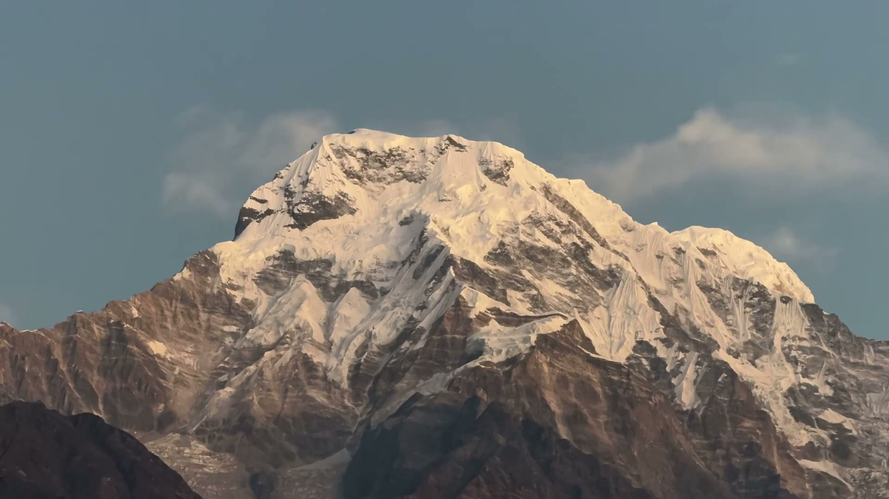

Good to Know
Everything about licenses, permits, weather windows, insurance, and how to prepare — straight from 15 years on the trail.
We have collected the most common questions and clear answers for trekkers coming to Nepal.
Generally, two types of permits are required for trekking in Nepal:
For restricted areas like Manaslu, a Restricted Area Permit (RAP) is also required. TerraBlaze Adventures will arrange all these documents and permits for you after booking.
Foreign nationals (except Indian citizens) can easily obtain a Tourist Visa on Arrival at Tribhuvan International Airport in Kathmandu. For this, your passport must be valid for at least 6 months. The visa fee can be paid in cash in USD or other major foreign currencies. You can also apply for a visa at a Nepalese embassy in your country before traveling.
Altitude sickness can occur above 3,000 meters due to lower oxygen levels. Key prevention methods include:
Yes, comprehensive travel insurance is mandatory for trekking in the Himalayas. Your insurance policy must cover emergency helicopter evacuation and medical expenses up to an altitude of at least 5,000 meters. You must purchase this in your home country before arriving in Nepal and send a copy of the policy to us.
For easy treks (like Langtang), a basic level of fitness is sufficient. However, demanding routes like Everest or Manaslu require good cardiovascular endurance. We recommend engaging in regular cardiovascular training, such as running, swimming, or stair-climbing, for at least 4-6 weeks before starting the trek.
There are two primary trekking seasons in Nepal: